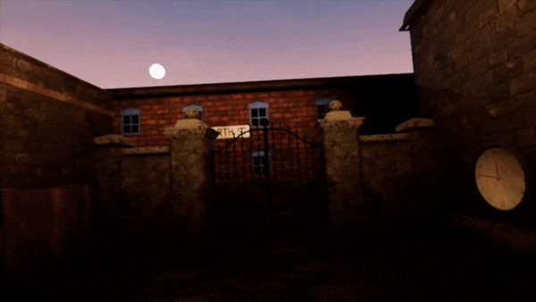
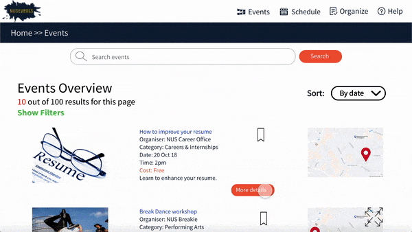

I am a student from National University of Singapore (NUS) focusing on software engineer, computer graphics and machine learning.
I like to explore and learn various parts of technology while challenging myself to code and brainstorm ideas to solve real life problems.
Below are some of my projects:
VR Game: ByStanders (Jan 2018 - May 2018):
A detective game in Virtual Reality (VR) based in 1981. After working hard to become a detective, you are faced with a really challenging crime scene where you will have to explore inside the witnesses' mind to find out hints to solving the crime. Each of them has "weird" characteristics and the hints are hard to find. Ultimately through exploration, you need to produce the actual crime scene. If you manage to get it correct, you will be able to find out the real criminal.
NUS Events (Aug 2018 - Dec 2018)
There is currently no common platform to collate all the events that is happening in NUS. Therefore, NUSEvents is used as an all-in-one platform to collate all these events happening in NUS. I hope students will be more informed on the day-to-day events that they can attend. Despite the basic functionalities, I also added a calendar function for students to plan their events based on the events they are interested in.
HPB project: iSoHealthy (June 2017)
Inspired by Singapore HPB Health365 application to reduce diabetes in Singapore. iSoHealthy is designed with the same purpose to encourage people to stay fit in a more user-friendly manner. It provides tips, exercise routines and most importantly, a community. Through user studies, I found out that previous version of Health365 is too cluttered with information and people are reluctant to open the application frequently. The general response is that a family or community of people staying fit together will encourage them to use the application more. Thus, I have built the application based on these feedbacks.